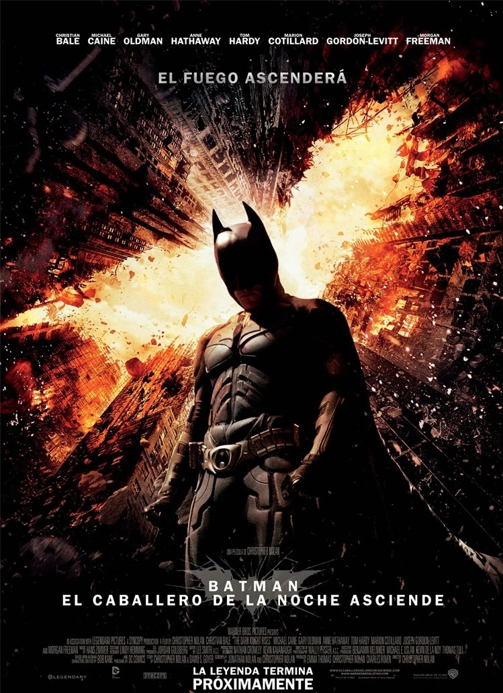

{kind=link}

Concepto
Sacado de:
DC Comics es una editorial de cómics estadounidense cuyas iniciales son una abreviatura de Detective Comics
uno de los primeros títulos emblemáticos de la compañía, forma parte de DC Entertainment
Regresar a las páginas
DC tiene una historia mas compleja y diversa que Marvel por lo cual es mas difícil
redactar su historia, bueno sin más que agregar comenzamos!!!
1. Origen
DC Comics fue fundada por el mayor Malcom Wheeler-Nicholson en 1935 con el nombre de National Allen publications quien mas
tarde cambiaria su nombre a Detective Comics, poco despues lanzarian varias series de comics entre ellas Action Comics que
en su primer numero presentó al primer superheroe de la historia: Superman lo cual provoco un gran exito en ventas.
2. Edad de Oro: 30s y 40s
Después de que superman viera la luz en 1938 salieron nuevos superheroes iconicos como Batman y Wonder Woman quienes formarían el primer
equipo de superheroes: La Sociedad de la Justicia de America (Mas tarde La Justice League) y la entrada de USA a la 2da Guerra Mundial propició
el auge de los súper héroes, a finales de los 40s y 50s el genero de súper héroes empezó a decaer y con ello las historias.
3. Edad de Plata: 50s y 60s
A finales de los 50s la compañía tomó un nuevo rumbo e inicio un rebrote de la industria del comic, se renovaron varios héroes y otros vieron la
luz como Flash, Green Lantern y HawkMan y se creó la Famosa Justice Leafue of America (Mas tarde renombrada Justice League) pero a diferencia de
la edad de oro DC ya no era el unico en publicar comics y aparecieron nuevas editoriales entre ellas Marvel comics que se consagraría como una
de las mejores editoriales de comics.

4.Edad de Bronce: 70s y 80s
Así llegamos a la última edad de los metales de los cómics Con nuevos escritores DC se volcó a tratar “temas más profundos”
y a mostrar las problemáticas humanas de los superhéroes. DC con una batería de escritores nuevos indagó en esta nueva tendencia,
se crearon muchos cómics con unos buenos primeros números, pero que de apoco fueron cayendo en la monotonía. DC Comics fue
tomando su forma oscura actual en esta época.

5. Crisis y Caida
A finales de los 80s y 90s el mundo se desinteresó por los comics lo cual hizo que cayeran en ventas, ademas de tener .
competitividad con Marvel, y problemas con el multiverso que nadie comprendía, Dc estaba en crisis pero poco a poco fue recuperandose.

6. Edad Moderna
Llegando el nuevo milenio Dc Comics ha logrado recuperarse de su crisis pero perdió influenzia y Marvel toma la delantera expandiendose mas
alla del comics, actualmente DC tambien esta tomando el mismo camino con su Universo Cinematrografico y recuperando su influencia que había
perdido durante y después de la crisis. En definitiva se puede decir que DC Comics esta volviendo a levantarse como nunca antes.

Cómics indispensables para conocer DC
Batman: The Killing Joke

The Sandman: Dream Country

Superman: Red Son

X-Men Days of Future Past

The Walking Dead: This Sorrowful Life

Crisis on Infinite Earths

Gracias por responder
| Nombre | Portada | Sinópsis |
|---|---|---|
| Steel 1997 | Un ex diseñador de armas del ejército usa una armadura para luchar contra un ex compañero,quien eligió el mal camino. | |
| Batman vs Superman 2016 | Batman se enfrenta a Superman, temeroso de que su afán de poder termine nublando su lucha contra la injusticia y lo convierta en un villano. Mientras los héroes pelean, una amenaza terrible se cierne sobre la humanidad. | |
| Escuadrón suicida 2 2021 | The Suicide Squad es una próxima película estadounidense de superhéroes basada en el equipo de antihéroes de DC Comics | |
| Mujer maravilla 1984 | Diana Prince, conocida como Mujer Maravilla, se enfrenta a una villana que posee fuerza y agilidad sobrehumanas. | |
| The Batman 2022 | The Batman es una película estadounidense de superhéroes dirigida por Matt Reeves y basada en el personaje homónimo creado por Bob Kane y Bill Finger para DC Comics. | |
| El hombre de acero 2013 | Mientras lucha con las repercusiones de su origen y sus habilidades extraordinarias, el joven Clark Kent debe convertirse en un héroe y salvar a las personas que ama de una grave amenaza. | |
| Batman el caballero de la noche 2008 |  | Batman tiene que mantener el equilibrio entre el heroísmo y el vigilantismo para pelear contra un vil criminal conocido como el Guasón, que pretende sumir Ciudad Gótica en la anarquía. |
| Guasón 2019 | Arthur Fleck adora hacer reír a la gente, pero su carrera como comediante es un fracaso. El repudio social, la marginación y una serie de trágicos acontecimientos lo conducen por el sendero de la locura y, finalmente, cae en el mundo del crimen. | |
| Linterna verde 2011 | Creados para preservar el orden intergaláctico, los Linternas Verdes han existido durante varios siglos. Su más reciente recluta, Hal Jordan, es el primer humano en unirse a sus filas. Los Linternas Verdes les tienen poco respeto a los humanos. | |
| Liga de la justicia la parábola del tiempo 2013 | Flash hace una onda temporal que crea una realidad donde la Liga de la Justicia nunca se había formado. Superman no existe y una guerra se desarrolla entre la Mujer Maravilla y Aquaman. Flash forma un equipo con Batman y Cyborg para solucionarlo. |


Cecyte Plantel 05 Etla
Tema: DC Comics
Integrantes de equipo: Miguel Montes Alondra Daniela
Sánchez Santiago Cristopher Damian
Grupo: 403